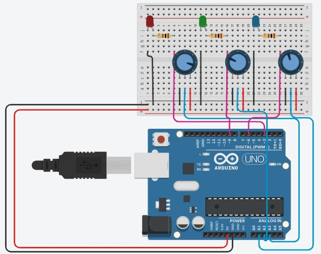

Kenjy's Site




Dit is de website voor het tweede examenperiode. Op deze website kan u meer info vinden over: mijn Arduino Project, mijn Animatie voor Softwareontwikkeling en wat meer over mezelf.
My GitHub Page